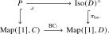
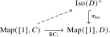
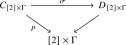
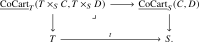

In order to phrase directed univalence, we need to have a category of cocartesian functors between two cocartesian fibrations \(p\colon C \to S\) and \(q\colon D \to S\). Recall from Definition 4.7.2 that a functor \(f\colon C \to D\) over \(S\) is a cocartesian functor if it sends \(p\)-cocartesian morphisms in \(C\) to \(q\)-cocartesian morphisms in \(D\), see Lemma 4.7.3. The goal of this section is to construct a category \(\ul{\CoCart}_S(C,D)\) over \(S\) whose global sections \(S \to \ul{\CoCart}_S(C,D)\) correspond to cocartesian functors from \(C\) to \(D\) over \(S\).
We will construct this category as a subcategory of the relative functor category \(\ul{\Fun}_S(C,D)\) of functors \(C \to D\) over \(S\), defined in Definition 3.5.10. For the latter to make sense, recall that we need the functor \(p\) to be an exponentiable functor, in the sense of Definition 3.5.5. In light of this, we will impose the following axiom:
Axiom M (Exponentiability Axiom). Let \(p\colon S \to T\) be a cartesian or cocartesian fibration. Then \(p\) is an exponentiable functor.
Example 8.1.1. Assume that \(S = \Gamma\) is an anima. By Corollary 4.5.22 any functor \(p\colon C \to \Gamma\) is a cocartesian fibration, hence in particular exponentiable. It follows that the relative functor category \(\ulFun_{\Gamma}(C,D)\) exists for any categories \(C\) and \(D\) over \(\Gamma\).
Construction 8.1.2. Let \(p\colon C \to S\) and \(q\colon D \to S\) be two cocartesian fibrations, and let \(f\colon C \to D\) be a functor over \(S\). We will construct a category \(\isCocart(f)\) whose objects are proofs that \(f\) is a cocartesian functor.
Recall from Corollary 6.5.9 that a functor \(f\colon C \to D\) over \(S\) is a cocartesian functor over \(S\) if and only if for every morphism \(v\colon x \to y\) in \(S\) and for every object \(c \in C(x)\) a certain canonical map \(\BC_!(v,c)\colon v_!f(c) \to f(v_!c)\) is an isomorphism in \(D\). This map is natural in the pair \((v,x)\), in the sense that it is part of a natural transformation of functors \(C \vectimes{p} S \to D\). Precomposing with the directed evaluation functor \(\vec{\ev}\colon \Fun([1],C) \to C \vectimes{p} S\), we thus obtain a functor \[ \BC_!\colon \Fun([1],C) \to \Fun([1],D) \] and \(f\) is a cocartesian functor over \(S\) if and only if \(\BC_!\) factors through the subcategory \(D \simeq \Iso(D) \hookrightarrow \Fun([1],D)\) of isomorphisms.
Consider now the following pullback square:

Lemma 8.1.3. For every \(f\) as above, the functor \(\isCocart(f) \to *\) is an embedding. In particular, if \(\isCocart(f)\) admits an (absolute) object, then it is contractible.
Proof
Note that \(P \to \Map([1],C)\) is an embedding, since it is the base change of the embedding \(\pi_{\Iso}\) from Lemma 2.3.3. It follows from Corollary 3.5.9 that also the map \(\isCocart(f) \to *\) is an embedding. An absolute object of \(\isCocart(f)\) determines a section of this embedding, which then by Lemma 1.6.24 implies that this embedding is an equivalence.
Observation 8.1.4. Note that \(\isCocart(f)\) admits an absolute object if and only if \(f\) is a cocartesian functor over \(S\). Indeed, an object \(* \to \isCocart(f)\) corresponds by adjunction to a section of the map \(P \to \Map([1],C)\), which in turn is equivalent to a lift of \(\BC_!\) along \(\pi_{\Iso}\):

Remark 8.1.5. The above constructions go through in the context of an arbitrary anima \(\Gamma\): for a category \(S\) in context \(\Gamma\), cocartesian fibration \(C \to S\) and \(D \to S\) in context \(\Gamma\), and a functor \(f\colon C \to D\) over \(S\) in context \(\Gamma\), we obtain a category \(\isCocart_{\Gamma}(f)\) in context \(\Gamma\).
We continue to fix two cocartesian fibrations \(p\colon C \to S\) and \(q\colon D \to S\) over \(S\). Our next goal is to define a subcategory \(\ul\CoCart_S(C,D) \subseteq \ulFun_S(C,D)\) spanned by the cocartesian functors \(C \to D\) over \(S\). More precisely, we would like that for any other functor \(T \to S\), a functor \(T \to \ulFun_S(C,D)\) over \(S\) factors through \(\ul\CoCart_S(C,D)\) if and only if the associated functor \(T \times_S C \to T \times_S D\) over \(T\) from Remark 3.5.11 is a cocartesian functor over \(T\).
Definition 8.1.6. Consider a morphism in \(\ulFun_S(C,D)\), i.e. an object of \(\Fun([1],\ulFun_S(C,D))\). Such an object is given by an anima \(\Gamma\) together with a functor \([1] \times \Gamma \to S\) and a functor over \([1] \times \Gamma\) of the form \[ f\colon ([1] \times \Gamma) \times_S C \to ([1] \times \Gamma) \times_S D. \] We say that the morphism is cocartesian if the associated map \(f\) is a cocartesian functor over \([1] \times \Gamma\). Equivalently, we may regard \(f\) as a functor over \(\Gamma\) and ask that it is a cocartesian functor over \([1]_{\Gamma}\) in context \(\Gamma\). By Remark 8.1.5, this is classified by a category \(\isCocart_{\Gamma}(f)\) in context \(\Gamma\).
We will apply this to the universal morphism of \(\ulFun_S(C,D)\):
Construction 8.1.7. Define \(T := [1] \times \Map([1],\ulFun_S(C,D))\). Then evaluation determines a map \[ \ev\colon T \to \ulFun_S(C,D), \] which corresponds to a functor \(T \to S\) together with a functor \[ f_{\univ}\colon C_T \to D_T. \] Applying Definition 8.1.6 to the case \(\Gamma = \Map([1],\ulFun_S(C,D))\), we thus obtain a category \(\isCocart_{\Gamma}(f_{\univ})\) in context \(\Gamma\), i.e. a functor \[ \isCocart_{\Gamma}(f_{\univ}) \hookrightarrow \Map([1],\ulFun_S(C,D)). \]
Lemma 8.1.8. The above functor is an embedding.
Proof
This is a special case of Lemma 8.1.3, applied in context \(\Gamma\).
Note that a morphism \(f\) in \(\ulFun_S(C,D)\) lies in the image of this embedding if and only if the corresponding functor \(([1] \times \Gamma) \times_S C \to ([1] \times \Gamma) \times_S D)\) over \([1] \times \Gamma\) is a cocartesian functor.
Lemma 8.1.9. The embedding \(M := \isCocart_{\Gamma}(f_{\univ}) \hookrightarrow \Map([1],\ulFun_S(C,D))\) forms a collection of morphisms in \(\ulFun_S(C,D)\) which is closed under composition, in the sense of Definition 3.1.6.
Proof
We first show that \(M\) is closed under identity maps. But this is clear: given a morphism \(f\) in \(\ulFun_S(C,D)\), the corresponding functors over \([1] \times \Gamma\) corresponding to \(\id_{f(0)}\) and \(\id_{f(1)}\) are given by pulling back the corresponding functor to \(f\) along the two maps \[ [1] \times \Gamma \to \{0\} \times \Gamma \hookrightarrow [1] \times \Gamma \qquadtext{ and } [1] \times \Gamma \to \{1\} \times \Gamma \hookrightarrow [1] \times \Gamma, \] and cocartesian functors are closed under base change, see Proposition 6.5.10.
We now show that \(M\) is closed under composition. Consider two morphisms \(f\) and \(g\) in \(\ulFun_S(C,D)\). By the Segal Axiom, we may just as well assume they arise as the restrictions of some map \(\sigma\colon [2] \times \Gamma \to \ulFun_S(C,D)\) along the two inclusions \([1]_{01} \hookrightarrow [2]\) and \([1]_{12} \hookrightarrow [2]\), where for \(0 \leq i < j \leq 2\) we write \([1]_{ij} \subseteq [2]\) for the subcategory spanned by \(i\) and \(j\). This map \(\sigma\) corresponds to a functor

Definition 8.1.10. We define the (non-full) subcategory \(\ul{\CoCart}_S(C,D) \subseteq \ulFun_S(C,D)\) as the subcategory spanned by \(M\): \[ \ul{\CoCart}_S(C,D) := \lra{M}_{\ulFun_S(C,D)} \subseteq \ulFun_S(C,D). \]
Lemma 8.1.11. Let \(C\) and \(D\) be categories, regarded as cocartesian fibrations over the terminal category \(S = *\). Then we have an equivalence \[ \ul{\CoCart}_*(C,D) \simeq \Map(C,D) \subseteq \Fun(C,D). \]
Proof
We need to show that a morphism \(f\colon [1]\to \Fun(C,D)\) lies in the image of \(M \hookrightarrow \Map([1],\Fun(C,D))\) if and only if it is a natural isomorphism of functors \(C \to D\). By definition, the former is the case if and only if the corresponding functor \([1] \times C \to [1] \times D\) is a cocartesian functor of cocartesian fibrations over \([1]\). The claim then follows from Lemma 4.7.13.
Lemma 8.1.12. Let \(p\colon X \to S\) and \(q\colon Y \to S\) be two left fibrations. Then the inclusion \[ \ul{\CoCart}_S(X,Y) \hookrightarrow \ulFun_S(X,Y) \] is an equivalence.
Proof
Since every functor between two left fibrations is a cocartesian functor, it follows that the embedding \(\isCocart_{\Gamma}(f_{\univ}) \hookrightarrow \Map([1],\ulFun_S(X,Y))\) is an equivalence. The claim thus follows from Corollary 3.1.14.
Proposition 8.1.13. Consider a functor \(T \to S\) and let \(\phi\colon T \to \ul\Fun_S(C,D)\) be a functor over \(S\), corresponding to a functor \(f\colon T \times_S C \to T \times_S D\) over \(T\). Then \(f\) is cocartesian over \(T\) if and only if \(\phi\) factors through the subcategory \(\ul{\CoCart}_S(C,D)\).
Proof
By definition of \(\ul{\CoCart}_S(C,D)\) as a subcategory, \(\phi\) factors through \(\ul{\CoCart}_S(C,D)\) if and only if the induced map \(\Map([1],T) \to \Map([1],\Fun_S(C,D)) = \Map_S([1] \times C, D)\) factors through \(M\). This is in turn equivalent to the condition that for every \(\Gamma\) and every map \(\alpha \colon \Gamma \to \Map_S([1],T)\), the object \[ \phi(\alpha) \colon \Gamma \to \Map_S([1],\Fun_S(C,D)) \] factors through \(M\). The map \(\alpha\) corresponds to a map \(\tilde{\alpha}\colon [1] \times \Gamma \to T\), and by definition of \(M\) this happens if and only if the induced functor \[ f_{\Gamma \times [1]} \colon (\Gamma \times [1]) \times_S C \to (\Gamma \times [1]) \times_S D \] is a cocartesian functor over \(\Gamma \times [1]\). Now, observe that this map is obtained from \(f_T\colon T \times_S C \to T \times_S D\) by pulling back along \(\tilde{\alpha}\colon \Gamma \times [1] \to T\), and thus it follows from Proposition 6.5.10 that the condition is equivalent to the condition that \(f_T\) is a cocartesian functor over \(T\). This finishes the proof.
Corollary 8.1.14. For every functor \(T \to S\), there is a pullback square of the form

Proof
The pullback square from Observation 3.5.12 restricts to a pullback square on the subcategories of cocartesian functors by Proposition 8.1.13.
Thus \(\ul{\CoCart}_S(C,D)\) represents cocartesian functors from \(C\) to \(D\) over \(S\), and this representation is stable under change of base. It will provide the target of the straightening map used to formulate directed univalence.